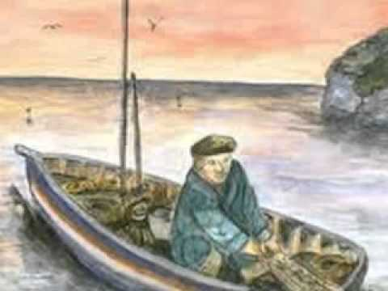

La lisa de plata
Allá por los años de mil novecientos setenta cuando el muelle de cemento del sector de Leticia era el sitio preferido por habilidosos pescadores de cordel, pues hasta ahí llegaban las aguas del mar. Pero hoy en esta simbólica construcción reina el olvido y la destrucción, pues la naturaleza y el tiempo han cumplido con su misión de recuperar lo dejado por el hombre; porque las aguas se alejaron metros más al oeste dejando una estela de recuerdos y arena.
Cuenta uno de aquellos pescadores, hoy un respetable anciano de más de ochenta años, que en las cercanías del muelle en mención había una especie de poza marina que poseía unas plantitas y animalillos que atraían a los peces, en especial a los pejerreyes, mojarrillas, tramboyos, borrachos y lisas. Aquel que tiraba su cordel, era un hecho que pescaba un pez, si era grande se la quedaba y los más chicos lo devolvían al mar. Recuerda que la faena diaria comenzaba a eso de las cuatro de la tarde hasta cerca de las siete de las noche y cuando volvían a casa cargado de pescados, su señora lo freía y lo servía arroz con pescado frito, ensalada de cebolla, té caliente y pan de agua.
Además me dice que la gente que iba a pescar comentaba una leyenda urbana que ocurría al pescador que se quedaba solo. Por la parte más profunda del humedal adyacente al muelle de Leticia vivía una lisa de plata de unos cuarenta centímetros. Este pez aparecía en los días de plenilunio, después del crepúsculo la brisa fría nocturna electriza los vellos y los huesos tiemblan como hojas. Muchos hombres de mar la han visto saltar a lo largo de la laguna, cuando tratan de pescarlo se escabulle más al fondo, las aletas y la cola le brillan como rayos de luna al golpear las aguas parecen que chorrean monedas.
- Ese pez es un encanto, no hay que pescarlo porque si lo haces te quitará el alma- me explica el buen hombre. Cierta vez un joven estaba pescando muchas mojarrillas, las horas pasaron rápidamente y la noche lo envolvió. De pronto escuchó que algo saltaba alocadamente por las mansas aguas. Era una lisa, ¡la lisa de plata! Tiró una y otra vez el cordel y nada. El pez se escabullía como retando al hombre. Entonces ni corto ni perezoso se arrojó en búsqueda del animal. En lucha caricaturesca, al final pudo cogerlo; pero la lisa desapareció en sus manos de manera inexplicable. Al regresar a su hogar, algo nervioso, contó la experiencia vivida y no le creyeron. Desde esa fecha el muchacho cambió por completo, se volvió medio loco dibujando lisas en las paredes, en los pisos, en cualquier parte.
Hasta la fecha nadie lo pudo atrapar. A pesar que ya no se pesca en el muelle de Leticia, los vecinos más ancianos todavía lo recuerdan, porque los que la han visto se extasiaron de lo bello que era la lisa de plata.
